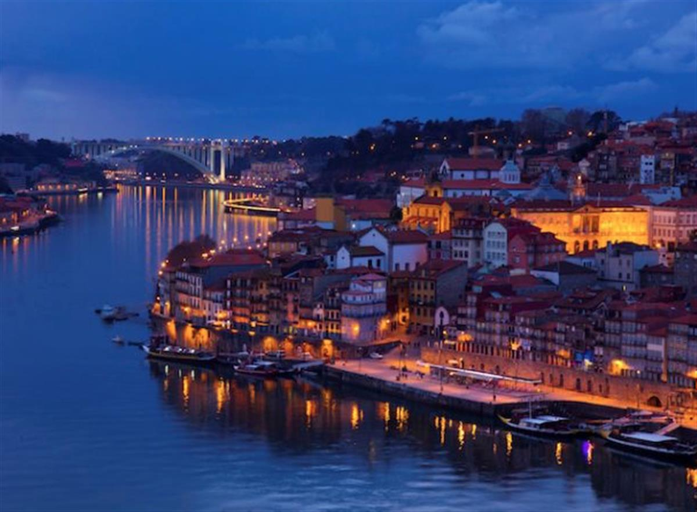

Zero emission milestone reached as country is powered by just wind, solar and hydro-generated electricity for 107 hours. As recently as 2013, renewables provided only about 23% of Portugal’s electricity. By 2015 that figure had risen to 48%.
Photograph: Pete Titmuss/Alamy Stock Photo
Arthur Neslen
Portugal kept its lights on with renewable energy alone for four consecutive days last week in a clean energy milestone revealed by data analysis of national energy network figures.
Electricity consumption in the country was fully covered by solar, wind and hydro power in an extraordinary 107-hour run that lasted from 6.45am on Saturday 7 May until 5.45pm the following Wednesday, says the analysis by the Sustainable Terrestrial System Association and the Portuguese Association of Renewable Energies (Apren).
News of the zero emissions landmark comes just days after Germany announced that clean energy had powered almost all its electricity needs on Sunday 15 May, with power prices turning negative at several times in the day – effectively paying consumers to use it.
Oliver Joy, a spokesman for the Wind Europe trade association said: “We are seeing trends like this spread across Europe - last year with Denmark and now in Portugal. The Iberian peninsula is a great resource for renewables and wind energy, not just for the region but for the whole of Europe.”
James Watson, the CEO of SolarPower Europe said: “This is a significant achievement for a European country, but what seems extraordinary today will be commonplace in Europe in just a few years. The energy transition process is gathering momentum and records such as this will continue to be set and broken across Europe.”
Last year, wind provided 22% of electricity and all renewable sources together provided 48%, according to the Portuguese renewable energy association.
While Portugal’s clean energy surge has been spurred by the EU’s renewable targets for 2020, support schemes for new wind capacity were reduced in 2012.
Despite this, Portugal added 550MW of wind capacity between 2013 and 2016, and industry groups now have their sights firmly set on the green energy’s export potential, within Europe and without.
“An increased build-out of interconnectors, a reformed electricity market and political will are all essential,” Joy said. “But with the right policies in place, wind could meet a quarter of Europe’s power needs in the next 15 years.”
In 2015, wind power alone met 42% of electricity demand in Denmark, 20% in Spain, 13% in Germany and 11% in the UK.
In a move hailed as a “historic turning point” by clean energy supporters, UK citizens last week enjoyed their first ever week of coal-free electricity generation.
Watson said: “The age of inflexible and polluting technologies is drawing to an end and power will increasingly be provided from clean, renewable sources.”

SOURCE: THE GUARDIAN